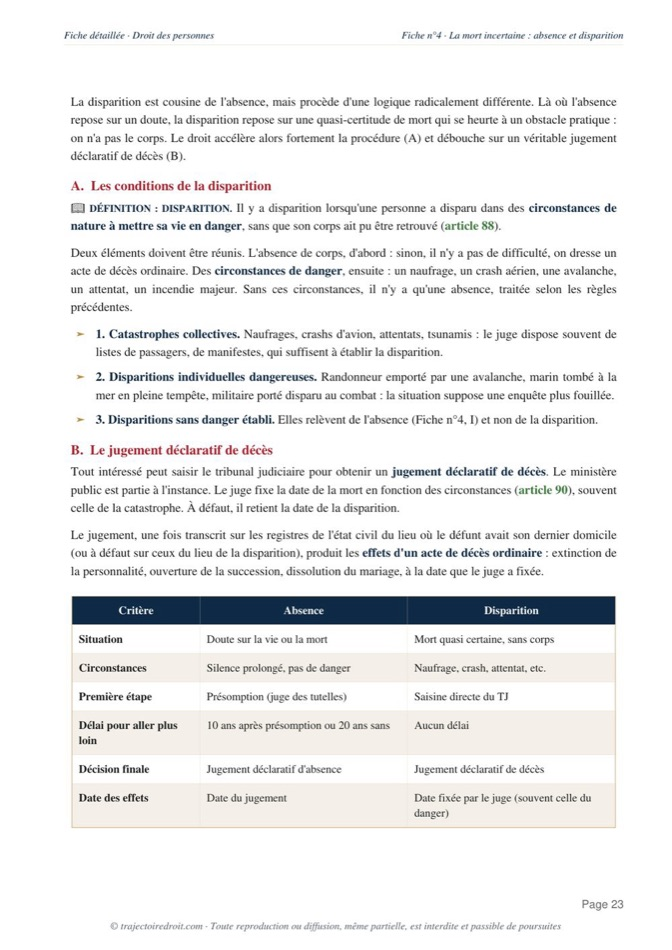

L'arrêt Sexe neutre expliqué simplement
L'arrêt Sexe neutre est rendu le 4 mai 2017 par la première chambre civile de la Cour de cassation. Elle juge que la loi française ne permet pas de faire figurer, dans les actes de l'état civil, l'indication d'un sexe autre que masculin ou féminin. La dualité des sexes reste donc le seul système reconnu, sauf réforme du législateur.

Que dit l'arrêt Sexe neutre ?
Une personne inscrite comme homme à sa naissance, mais dont la constitution biologique ne correspond ni au sexe masculin ni au sexe féminin, demande à la justice de remplacer cette mention par « sexe neutre » ou « intersexe ». Le tribunal de grande instance de Tours lui donne raison en 2015. La cour d'appel d'Orléans annule ce jugement en 2016 et rétablit la mention masculine. L'affaire monte jusqu'à la Cour de cassation, qui tranche le 4 mai 2017. La première chambre civile rejette le pourvoi et pose que la loi française ne connaît que deux sexes à l'état civil, le masculin et le féminin.
L'arrêt s'inscrit dans une histoire précise. En 1992, l'Assemblée plénière de la Cour de cassation a déjà admis qu'une personne transsexuelle change de mention de sexe, du masculin au féminin ou l'inverse, au nom du respect de la vie privée. En 2017, la première chambre civile refuse d'aller plus loin. Le vécu de la personne peut faire basculer sa mention d'une case à l'autre, mais il ne peut pas la faire sortir des deux cases existantes. Depuis 2023, la Cour européenne des droits de l'homme a confirmé cette position dans l'arrêt Y. c. France.
Le tribunal de grande instance de Tours ordonne l'inscription de la mention « sexe neutre » sur l'acte de naissance de M. Y...
La cour d'appel d'Orléans infirme le jugement et rétablit la mention « sexe masculin », faute de troisième catégorie prévue par la loi.
La première chambre civile rejette le pourvoi et pose que la loi française ne connaît que le masculin et le féminin.
La Cour européenne des droits de l'homme confirme la solution française dans l'arrêt Y. c. France, au nom de la marge d'appréciation des États.

Fiche complète
Droit des personnes L1
Les faits, une personne intersexuée
M. Y... est inscrit à sa naissance comme étant de sexe masculin, en application de l'article 57 du Code civil, qui impose de faire figurer un sexe sur l'acte de naissance. Devenu adulte, il présente un développement génital incomplet, avec à la fois des caractères masculins et des caractères féminins, sans que sa constitution biologique corresponde vraiment à l'un des deux sexes. Il ne s'identifie ni comme un homme ni comme une femme. Aux yeux des tiers, cependant, il conserve l'apparence et le comportement social d'un homme, conformes à la mention portée sur son acte de naissance.
Il saisit la justice pour faire rectifier cet acte, et demande le remplacement de la mention « sexe masculin » par « sexe neutre », ou à défaut « intersexe ».
La procédure
Le tribunal de grande instance de Tours, par un jugement du 20 août 2015, fait droit à sa demande et ordonne l'inscription de la mention « sexe neutre ». Le ministère public interjette appel. La cour d'appel d'Orléans, le 22 mars 2016, infirme ce jugement et rétablit la mention « sexe masculin ». Elle juge que la loi française ne connaît que deux sexes, et que la création d'une troisième catégorie dépasse ce qu'un juge peut décider. M. Y... forme alors un pourvoi en cassation, en soutenant que ce refus porte une atteinte disproportionnée à son droit au respect de la vie privée, garanti par l'article 8 de la Convention européenne des droits de l'homme.
Un sexe neutre peut-il être inscrit à l'état civil ?
La Cour de cassation doit répondre à une question précise. Une personne dont la constitution biologique ne correspond ni au sexe masculin ni au sexe féminin peut-elle obtenir, à l'état civil, l'inscription d'un sexe autre que ces deux mentions ? Cette question de droit civil engage en réalité un choix de société. Faut-il ouvrir l'état civil français à une troisième catégorie de sexe, comme l'ont fait certains pays étrangers, ou garder le système binaire hérité du Code civil ?
La solution, le refus d'une troisième catégorie
La Cour de cassation rejette le pourvoi, dans un attendu devenu la formule de référence de toute la matière.
L'attendu de l'arrêt Sexe neutre
« La loi française ne permet pas de faire figurer, dans les actes de l'état civil, l'indication d'un sexe autre que masculin ou féminin. »Cass. 1re civ., 4 mai 2017, n° 16-17.189
Cet attendu exclut toute mention intermédiaire. La Cour ajoute une deuxième idée, tout aussi importante. Elle juge que la dualité des énonciations relatives au sexe dans les actes de l'état civil « poursuit un but légitime en ce qu'elle est nécessaire à l'organisation sociale et juridique, dont elle constitue un élément fondateur ». Le sexe est donc une donnée qui identifie chaque personne, mais de nombreuses règles du droit français s'appuient aussi sur cette donnée, à savoir la filiation, qui distingue le père et la mère, mais aussi le mariage et les régimes matrimoniaux. Créer une troisième catégorie obligerait à revoir tout ce qui repose aujourd'hui sur l'opposition entre l'homme et la femme.
La Cour tire la conséquence de ce constat. Elle juge que « la reconnaissance par le juge d'un "sexe neutre" aurait des répercussions profondes sur les règles du droit français construites à partir de la binarité des sexes et impliquerait de nombreuses modifications législatives de coordination ». Un tel changement dépasse donc ce qu'un juge peut décider seul, à l'occasion d'un litige. Il revient au Parlement d'en décider, car lui seul peut consulter la société et en débattre avant d'engager une réforme d'une telle ampleur.
Tu révises ton droit des personnes ?
Reçois gratuitement mon guide « Réviser le droit sans s'épuiser ». La méthode que mes élèves utilisent pour retenir les grands arrêts sans les bachoter la veille.
Pourquoi la Cour refuse-t-elle une troisième catégorie ?
La Cour juge que ce choix engage tout le droit de la famille et dépasse l'office du juge, qui applique la loi sans la refaire. Son raisonnement tient en deux temps.
D'abord, elle reconnaît que la question touche à un droit protégé. Elle admet que « l'identité sexuelle relève de la sphère protégée par l'article 8 de la Convention de sauvegarde des droits de l'homme et des libertés fondamentales ». Refuser à une personne la mention de son sexe ressenti porte donc atteinte à un droit garanti par la Convention, et la Cour doit justifier cette atteinte au lieu de s'en tenir au silence de la loi.
Ensuite, la Cour vérifie que cette atteinte reste proportionnée, selon la méthode du contrôle de proportionnalité, qui consiste à vérifier qu'une atteinte à un droit poursuit un but légitime et reste mesurée par rapport à ce but. Le but légitime tient ici à la cohérence de l'organisation sociale et juridique fondée sur la dualité des sexes. La Cour ajoute un élément concret, propre à ce dossier. Elle relève que la cour d'appel avait constaté que M. Y... avait « aux yeux des tiers, l'apparence et le comportement social d'une personne de sexe masculin, conformément à l'indication portée dans son acte de naissance », et qu'elle a pu en déduire que l'atteinte à sa vie privée n'était pas disproportionnée. Dans ce cas précis, l'écart entre l'identité vécue et la mention inscrite sur l'acte de naissance restait donc limité aux yeux du droit, ce qui rendait la contrainte supportable pour la Cour.
La portée, de 1992 à la décision européenne de 2023
Cet arrêt s'inscrit dans une histoire plus longue, celle de la mention du sexe à l'état civil. Le 11 décembre 1992, l'Assemblée plénière de la Cour de cassation a pour la première fois admis qu'une personne transsexuelle, après un traitement médical, obtienne le changement de la mention de son sexe à l'état civil, au nom du respect de sa vie privée. Le vécu de la personne l'emportait alors sur son sexe de naissance. Mais ce changement ne jouait que d'une case à l'autre, du masculin au féminin ou l'inverse. L'arrêt de 2017 montre que cette mobilité reste limitée au système binaire, car on peut passer d'un sexe à l'autre, mais on ne peut pas sortir des deux sexes.
Le mouvement vers la prise en compte du vécu individuel s'est même renforcé après 1992. La loi du 18 novembre 2016 de modernisation de la justice du XXIe siècle, aux articles 61-5 et suivants du Code civil, a supprimé l'exigence d'une opération ou d'un traitement médical pour changer de sexe à l'état civil. La Cour européenne des droits de l'homme était déjà allée dans cette direction quelques semaines avant l'arrêt Sexe neutre, dans l'arrêt A.P., Garçon et Nicot contre France du 6 avril 2017, en condamnant la France pour avoir subordonné le changement de sexe à une stérilisation. Le droit est donc devenu plus souple sur le changement de sexe, mais cette souplesse ne dépasse pas les deux catégories déjà connues.
La suite judiciaire de l'affaire confirme la portée de l'arrêt de 2017. M. Y... a saisi la Cour européenne des droits de l'homme après le rejet de son pourvoi. Le 31 janvier 2023, dans l'arrêt Y. c. France, la Cour de Strasbourg juge, par six voix contre une, qu'il n'y a pas violation de l'article 8 de la Convention. Elle reconnaît que l'impossibilité de faire reconnaître une identité biologique intersexuée touche à la vie privée, mais elle estime que la France garde une marge d'appréciation sur un sujet de société qui divise les États membres, et qu'il lui revient d'en fixer elle-même le rythme. La solution française tient donc devant le juge européen, six ans après l'arrêt de la Cour de cassation.
La critique, entre cohérence du système et retenue discutée
La décision a partagé la doctrine. Benjamin Moron-Puech, dans sa note au Recueil Dalloz, reproche à la Cour d'avoir mené un contrôle de proportionnalité de façade, qui s'appuie sur l'apparence masculine de M. Y... pour confirmer une solution déjà décidée par principe. Jean Hauser, dans ses observations à la Revue trimestrielle de droit civil, approuve au contraire la prudence de la Cour et estime que la reconnaissance d'un troisième sexe dépasse clairement l'office du juge.
Le débat porte surtout sur un point. La Cour fonde la binarité sur la seule nécessité de l'organisation sociale et juridique, sans citer aucun texte qui l'impose expressément. L'argument reste solide, car de nombreuses règles du droit français supposent effectivement deux sexes, la filiation notamment. Mais il montre seulement que la binarité est commode pour le système actuel, et non qu'elle est la seule organisation possible. La Cour constitutionnelle fédérale allemande a par exemple ajouté, le 10 octobre 2017, une troisième mention à l'état civil allemand, sans que le système juridique s'effondre. Cette comparaison ne rend pas l'arrêt français critiquable en lui-même. Elle montre seulement qu'un autre choix reste possible, et que la Cour de cassation a préféré laisser ce choix au Parlement plutôt que de l'imposer elle-même.
L'arrêt Sexe neutre se limite à constater que le droit français actuel ne permet pas une troisième catégorie, et il renvoie ce choix au législateur. Ce renvoi laisse la personne intersexuée dans une situation difficile, tenue de porter un sexe qui ne correspond pas à son corps, en attendant une réforme qui n'est toujours pas venue.
Comment utiliser l'arrêt Sexe neutre dans une copie
Dans une dissertation. Sexe neutre devient ta référence dès que le sujet touche à l'identité de la personne, à la mention du sexe à l'état civil, ou à l'articulation entre le droit au respect de la vie privée et l'ordre public. Tu le cites pour montrer la limite posée en 2017 à la logique posée par l'arrêt de 1992, puis tu prolonges avec la loi du 18 novembre 2016 et la confirmation européenne de 2023. Pour la méthode complète, regarde ma page sur la dissertation juridique.
Dans un commentaire d'arrêt. Si tu commentes Sexe neutre lui-même, distingue bien les deux temps du raisonnement, à savoir le refus assumé d'une troisième catégorie de sexe, puis le contrôle de proportionnalité qui valide cette atteinte à la vie privée au regard de l'article 8 de la Convention. Pour la méthode complète, regarde ma page sur le commentaire d'arrêt et celle sur la fiche d'arrêt.
Dans un cas pratique. Dès qu'un énoncé fait intervenir une personne dont l'état civil ne correspond pas à son identité vécue, distingue d'abord s'il s'agit d'un changement entre les deux sexes existants, auquel cas la procédure simplifiée de la loi du 18 novembre 2016 s'applique, ou d'une demande de sortir de ces deux catégories, auquel cas la solution de l'arrêt Sexe neutre s'applique et empêche toute solution judiciaire. Ce même exercice de mise en balance entre un droit individuel et l'organisation générale du droit de la famille se retrouve dans l'arrêt Perruche, où la Cour distingue le préjudice de la mère de celui, propre, de l'enfant, et dans l'arrêt Mennesson, sur la transcription de l'acte de naissance d'un enfant né d'une gestation pour autrui à l'étranger. Si tu veux voir comment ce raisonnement s'articule avec le reste du programme, notamment le début de la personnalité juridique et la protection de la vie privée, tout est repris pas à pas dans ma fiche de droit des personnes L1.
Les erreurs à éviter avec l'arrêt Sexe neutre
- Confondre Sexe neutre avec l'arrêt de 1992. L'arrêt de 1992 autorise le changement de sexe entre masculin et féminin. Sexe neutre, en 2017, refuse seulement la création d'une troisième catégorie. Ce sont deux questions distinctes.
- Croire que l'arrêt interdit tout changement de sexe. Il ne concerne que la mention « sexe neutre » ou « intersexe ». Le changement entre masculin et féminin reste possible depuis 2016, sans exigence médicale.
- Se tromper sur la formation de jugement. L'arrêt est rendu par la première chambre civile, et non par l'Assemblée plénière, à la différence de l'arrêt de 1992.
- Oublier la confirmation européenne de 2023. L'arrêt Y. c. France montre que la solution française tient toujours devant la Cour européenne des droits de l'homme, six ans après l'arrêt de la Cour de cassation.
Questions fréquentes
Que dit l'arrêt Sexe neutre en une phrase ?
Pourquoi l'arrêt Sexe neutre est-il important ?
Quelle est la date et la juridiction de l'arrêt Sexe neutre ?
L'arrêt Sexe neutre est-il toujours d'actualité ?
Comment citer l'arrêt Sexe neutre en copie ?

Comprends tout le droit des personnes, au-delà du seul arrêt Sexe neutre.
Ma fiche de droit des personnes L1 reprend chaque grand arrêt et chaque notion, expliqués simplement et prêts à servir en commentaire comme en cas pratique.
Voir la fiche de droit des personnes L1